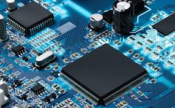

An embedded system is a special purpose system in which the computer is completely encasulated by or dedicated
to the device or system it controls.unlike a general purpose computer,such as a personal computer,an embedded sytem  performs one or a few predefined tasks
,usually with very specific requirements.
Since the system is dedicated to specific tasks,design engineers can optimize it,reducing the size and cost of the product.
Embedded system are often mass-produced,benefiting from economies of scale.
Personally digital assistants or handheld computers are generally considered embedded devices because of the nature
of their hardware design,even though they are more expandable in software terms.This line of defination continues to blur as device expand.
with the introduction of the OQO model2 with the windows xp operating system and ports such as a usb port both features usally belong to general puropose
computers,
the line of nomenclature blurs even more.in terms of complexity embedded system can range from very simple with a single
microcontroller chip,
to very complex with multiple units,peripherals and networks mounted inside a large chassis or enclouser.